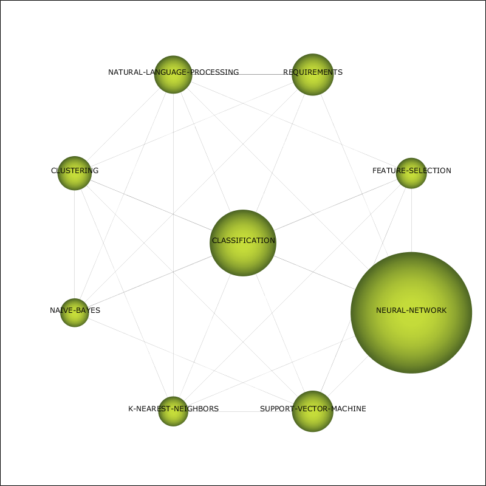
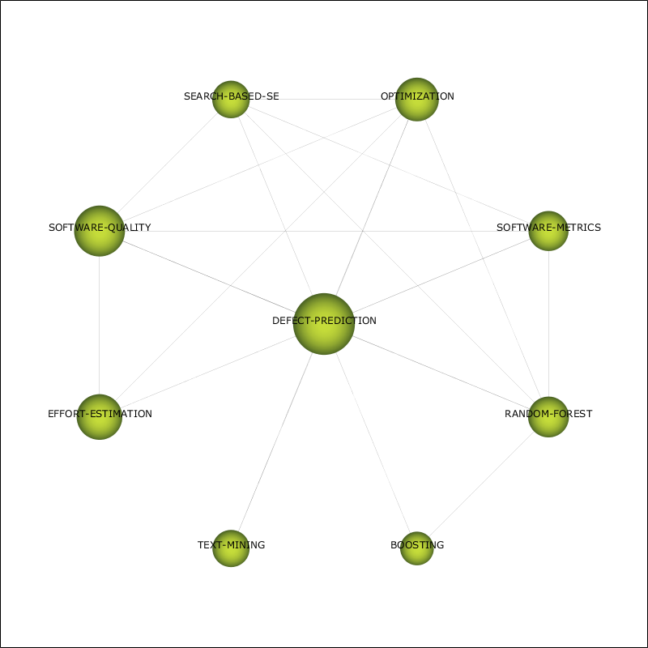
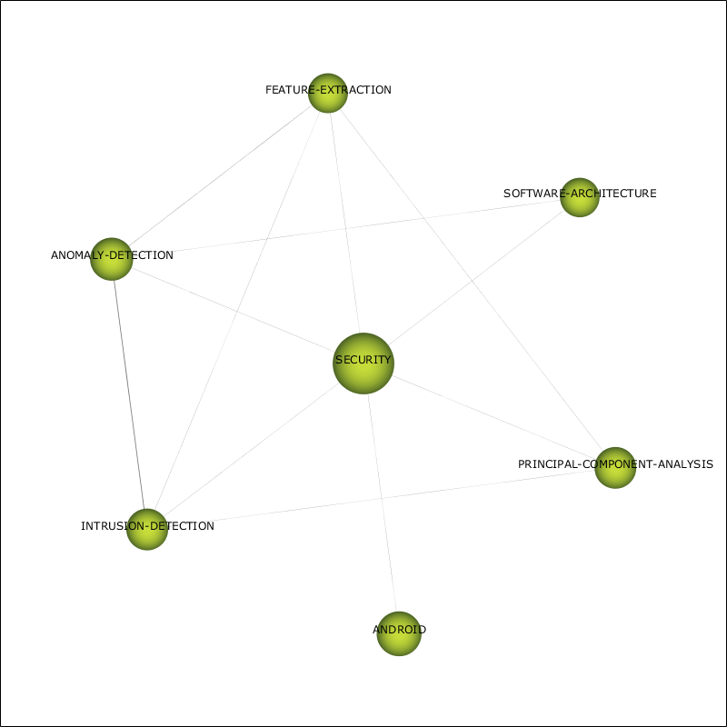

| Performance measure | Strategic diagram |
| unionDocuments-documentsCount | |
| unionDocuments-hIndex | |
| unionDocuments-gIndex | |
| unionDocuments-hgIndex | |
| unionDocuments-q2Index | |
| unionDocuments-averageCitations | |
| unionDocuments-sumCitations | |
| unionDocuments-maxCitations | |
| unionDocuments-minCitations |
| Name | Centrality | Centrality range | Density | Density range |
| CLASSIFICATION | 7.07 | 0.8 | 3.28 | 1 |
| DEFECT-PREDICTION | 6.53 | 0.6 | 2.28 | 0.6 |
| GENETIC-ALGORITHMS | 7.64 | 1 | 0.59 | 0.2 |
| TOPIC-MODELING | 3.75 | 0.4 | 0.81 | 0.4 |
| SECURITY | 3.41 | 0.2 | 2.75 | 0.8 |
| Name | unionDocumentsdocumentsCount | unionDocumentshIndex | unionDocumentsgIndex | unionDocumentshgIndex | unionDocumentsq2Index | unionDocumentsaverageCitations | unionDocumentssumCitations | unionDocumentsmaxCitations | unionDocumentsminCitations |
| CLASSIFICATION | 581 | 29 | 44 | 35.72 | 36.12 | 5.79 | 3,363 | 132 | 0 |
| DEFECT-PREDICTION | 201 | 24 | 37 | 29.8 | 29.8 | 9.79 | 1,968 | 132 | 0 |
| GENETIC-ALGORITHMS | 236 | 21 | 32 | 25.92 | 26.32 | 6.88 | 1,623 | 128 | 0 |
| TOPIC-MODELING | 173 | 21 | 34 | 26.72 | 30.05 | 8.87 | 1,535 | 131 | 0 |
| SECURITY | 111 | 10 | 18 | 13.42 | 16.73 | 4.53 | 503 | 58 | 0 |
| Name | Cluster's network |
| CLASSIFICATION |  |
| DEFECT-PREDICTION |  |
| GENETIC-ALGORITHMS | |
| TOPIC-MODELING | |
| SECURITY |  |